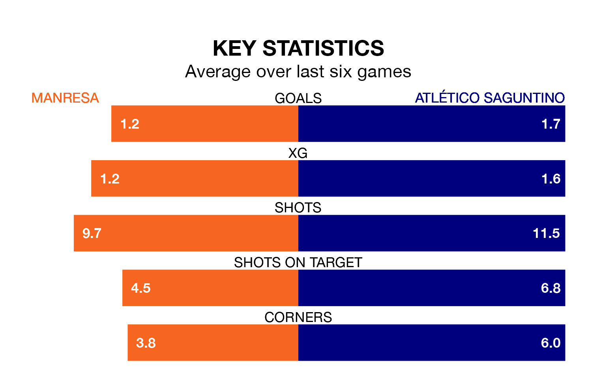

Manresa host Atlético Saguntino on Sunday in Segunda División RFEF Group 3.
In their last league match, on January 7, Manresa lost to UD Alzira 1-0 at home.
Atlético Saguntino won, 3-1 at home against Valencia B.
With 16 goals in 17 games so far this season, Manresa are the league's third-lowest scorers with 0.9 goals per game. But they are conceding fewer than average too, letting in 15 goals at a rate of 0.9 per game.
Atlético Saguntino, meanwhile, are average scorers, with 1.2 goals per game. They have conceded 1.4 goals per game.
The hosts are in mixed form in Segunda División RFEF Group 3, with two wins and a draw from their last six games.
With three wins and a draw over that period, the away side's form is better – they have taken 10 points from 18, compared to Manresa's seven.
Manresa are 10th in the table after 17 games, of which they have won five and drawn six, earning 21 points.
Atlético Saguntino are one place ahead of the home team in ninth, with six wins and four draws putting them on 22 points.
Updated: 15:34, 08/01/24